RF engineering, RF compliance, field services, IT, and talent staffing — delivered by people who have built, tested, and optimized the networks themselves.
Medley Networks delivers end-to-end solutions across Telecommunications, Information Technology, and Talent Staffing. Our professionals bring deep, hands-on experience across the full network lifecycle — from 4G LTE and 5G NR deployments to Private Wireless Networks, C-RAN, and Fixed Wireless Access — as well as software development, cloud infrastructure, data analytics, and AI-driven applications.
Beyond technology, we are a people business. Medley's staffing division places skilled professionals — RF engineers, field technicians, IT specialists, finance professionals, and administrative staff — with some of the most recognized names in the telecom and technology industries. Whether you need a technical team to deliver a project or the right hire to grow your organization, Medley Networks is your trusted partner.
Headquartered in Parsippany, NJ, we combine the agility of a specialized firm with the capabilities of a full-service technology and staffing organization — built on a commitment to quality, speed, and lasting client relationships.
Medley Networks is an independent provider of technology services, staffing solutions, and specialized expertise — operating at the intersection of Telecommunications, Information Technology, and Workforce Solutions. Headquartered in Parsippany, NJ, we serve carriers, tower companies, technology firms, and enterprises across the United States.
We are not a single-service company. Our professionals support the full project lifecycle — from RF design and 5G network optimization to field construction, RF compliance, IT application development, cloud services, and AI-powered solutions. Alongside our technical services, our staffing division places skilled professionals across Telecom, IT, Healthcare, Finance, and Professional Services — on contract, contract-to-hire, and direct placement engagements.
What sets Medley apart is domain depth. Our team has built networks, designed RF solutions, and managed projects from the ground up. That firsthand expertise shapes the way we deliver services and the way we evaluate talent — ensuring our clients and candidates are always working with people who understand the work at a technical level.
Medley Networks is built on three operating principles: client problems are our problems; complex processes reduce quality, so we simplify relentlessly; and people are the foundation of any organization — we develop ours, and we place the best in yours.
Your challenges are our challenges. We align every engagement around delivering measurable outcomes — on time and within scope.
We continuously simplify and improve how we work — so our teams deliver faster, and our clients experience fewer friction points.
Great outcomes come from great people. We invest in developing our team and place only rigorously vetted professionals with our clients.
Medley Networks integrates AI-driven tools across both our project delivery and staffing operations. On the delivery side, we leverage AI for network performance analytics, RF optimization modeling, and automated reporting — enabling faster, more accurate outcomes for our telecom clients.
In staffing, our AI-assisted candidate sourcing and screening pipeline accelerates matching, reduces time-to-fill, and surfaces higher-quality candidates earlier in the process — so clients spend less time reviewing resumes and more time meeting the right people.
Six integrated practices — one accountable team, from design through deployment and beyond.


FCC-compliant RF safety signage manufactured to ANSI Z535 and IEEE C95.2 standards for carriers, tower owners, and site operators.
These aluminum GUIDELINE signs measure 7.5"(W) x 6"(H) with two 3/8" holes, one at the top and one at the bottom are coated with an industrial strength UV inhibitor for added longevity. This surface mount sign printed in color on a white background is UV, chemical, abrasion, and moisture resistant. RF energy advisory symbol, text fonts, sizes, and colors per ANSI Z535-1998 and IEEE Std. C95.2-1999. This sign will inform anyone of the basic precautions to follow when entering an area where operating radiofrequency equipment is located. This sign should only be posted at the access point along with the NOC sign to inform of the general radio frequency safety guidelines.
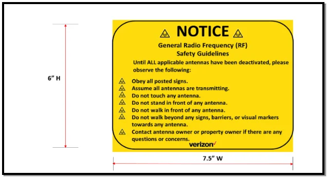
These aluminum NOC signs measure 7.5"(W) x 6"(H) with two 3/8" holes, one at the top and one at the bottom are coated with an industrial strength UV inhibitor for added longevity. This surface mount sign printed in color on a white background is UV, chemical, abrasion, and moisture resistant. RF energy advisory symbol, text fonts, sizes, and colors per ANSI Z535-1998 and IEEE Std. C95.2-1999. This sign will inform anyone of the basic precautions to follow when entering an area where operating radiofrequency equipment is located. This sign should only be posted at the access point along with the RF Guideline sign. The Network Operations Center (NOC) is responsible for fielding calls from the public for maintenance requests and other RF exposure-related inquiries. In order for the NOC to properly identify the site, the mentioned signage elements must be placed in appropriate fields on all signage.
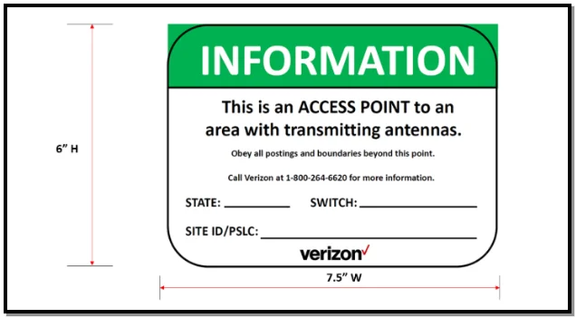
These aluminum NOTICE signs measure 7.5"(W) x 6"(H) with two 3/8" holes, one at the top and one at the bottom are coated with an industrial-strength UV inhibitor for added longevity. This surface mount sign printed in color on a white background is UV, chemical, abrasion, and moisture resistant. RF energy advisory symbol, text fonts, sizes, and colors per ANSI Z535-1998 and IEEE Std. C95.2-1999 These signs shall be posted in areas where the RF assessment has determined that RF emissions may exceed the general population exposure limits. Trained transient personnel working in an area with a blue "NOTICE" must be supervised by an occupational worker with proper training.
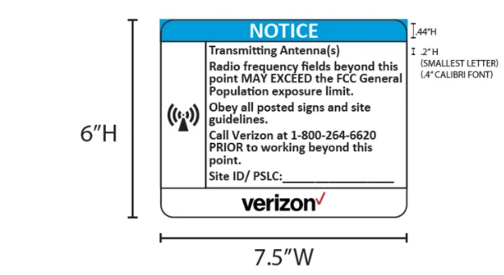
These aluminum NOTICE signs measure 6"(W) x 7.5 "(H) with two 3/8" holes, one at the top and one at the bottom are coated with an industrial strength UV inhibitor for added longevity. This surface mount sign printed in color on a white background is UV, chemical, abrasion, and moisture resistant. RF energy advisory symbol, text fonts, sizes, and colors per ANSI Z535-1998 and IEEE Std. C95.2-1999. These signs shall be posted in areas where the RF assessment has determined that RF emissions may exceed the general population exposure limits. Trained transient personnel working in an area with a blue "NOTICE" must be supervised by an occupational worker with proper training.
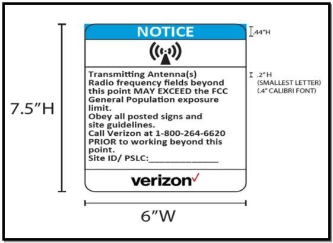
These aluminum NOTICE signs measure 7.5"(H) x 6 "(W) with two 3/8" holes, one at the top and one at the bottom are coated with an industrial strength UV inhibitor for added longevity. This surface mount sign printed in color on a white background is UV, chemical, abrasion, and moisture resistant. RF energy advisory symbol, text fonts, sizes, and colors per ANSI Z535-1998 and IEEE Std. C95.2-1999. In situations where additional signage is needed for areas that are not completely noticeable, arrow signs may enhance the notification to the general public. Arrow signs can indicate that areas behind the sign and to the left to the edge of the sign exceed general population exposure limits. The arrow signs must be used in conjunction with the HYBRID BARRIER SYSTEM. Trained transient personnel working in an area with a blue "NOTICE" must be supervised by an occupational worker with proper training.
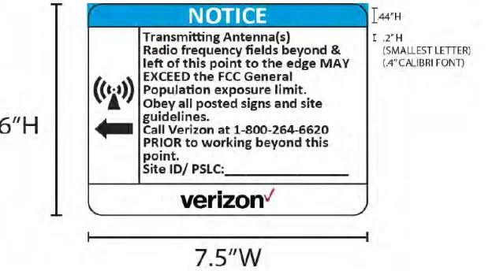
These aluminum NOTICE signs measure 7.5"(W) x 6 "(H) with two 3/8" holes, one at the top and one at the bottom are coated with an industrial strength UV inhibitor for added longevity. This surface mount sign printed in color on a white background is UV, chemical, abrasion, and moisture resistant. RF energy advisory symbol, text fonts, sizes, and colors per ANSI Z535-1998 and IEEE Std. C95.2-1999. In situations where additional signage is needed for areas that are not completely noticeable, arrow signs may enhance the notification to the general public. Arrow signs can indicate that areas behind the sign and to the right to the edge of the sign exceed general population exposure limits. The arrow signs must be used in conjunction with the HYBRID BARRIER SYSTEM. Trained transient personnel working in an area with a blue "NOTICE" must be supervised by an occupational worker with proper training.
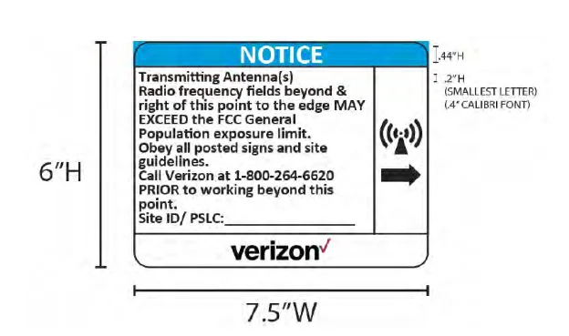
These aluminum Stay Back Notice signs measure 7.5"(W) x 6"(H) with two 3/8" holes, one at the top and one at the bottom are coated with an industrial strength UV inhibitor for added longevity. This surface mount sign printed in color on a white background is UV, chemical, abrasion, and moisture resistant. RF energy advisory symbol, text fonts, sizes, and colors per ANSI Z535-1998 and IEEE Std. C95.2-1999. These signs shall be posted in areas where the RF assessment has determined that RF emissions may exceed the general population exposure limits. Trained transient personnel working in an area with a blue "Stay Back Notice" must be supervised by an occupational worker with proper training. When the primary means of administrative controls (i.e. barriers) cannot be feasibly installed due to various reasons, Stay Back should be used.
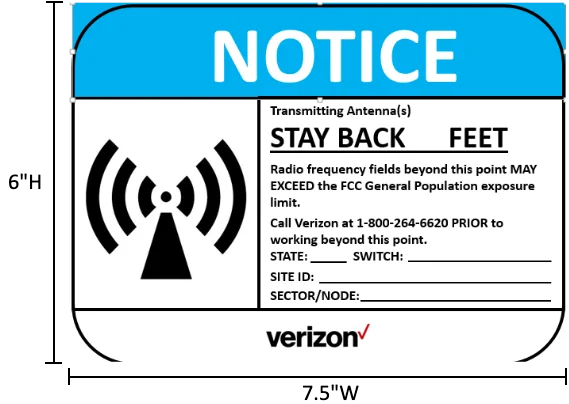
These aluminum Stay Back Notice signs measure 10"(W) x 7"(H) with two 3/8" holes, one at the top and one at the bottom are coated with an industrial strength UV inhibitor for added longevity. This surface mount sign printed in color on a white background is UV, chemical, abrasion, and moisture resistant. RF energy advisory symbol, text fonts, sizes, and colors per ANSI Z535-1998 and IEEE Std. C95.2-1999. These signs shall be posted in areas where the RF assessment has determined that RF emissions may exceed the general population exposure limits. Trained transient personnel working in an area with a blue "Stay Back Notice" must be supervised by an occupational worker with proper training. When the primary means of administrative controls (i.e. barriers) cannot be feasibly installed due to various reasons, Stay Back should be used.
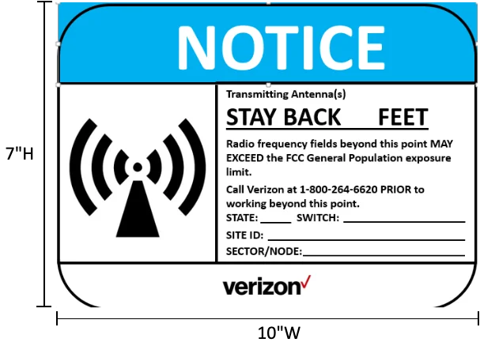
These aluminum CAUTION signs measure 6"(W) x 7.5 "(H) with two 3/8" holes, one at the top and one at the bottom are coated with an industrial strength UV inhibitor for added longevity. This surface mount sign printed in color on a white background is UV, chemical, abrasion, and moisture resistant. RF energy advisory symbol, text fonts, sizes, and colors per ANSI Z535-1998 and IEEE Std. C95.2-1999. These signs shall be posted in areas where the RF assessment has determined RF emissions may exceed the FCC Occupational Exposure Limits but by No More Than Ten Times (10x). These may include areas such as at the bases of communications towers/proximity of antennas where personnel were to access these areas may find themselves in RF fields that exceed the FCC Occupational Exposure Limits. Trained transient personnel working in an area with a Yellow "CAUTION" must be supervised by an occupational worker with proper training.
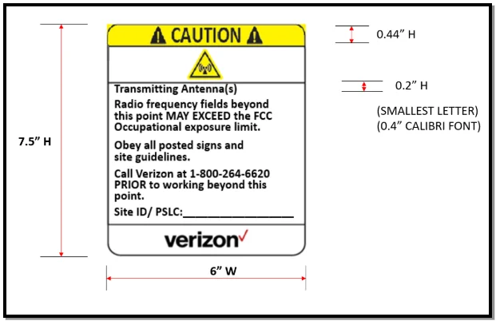
These aluminum CAUTION signs measure 7.5"(W) x 6"(H) with two 3/8" holes one at the top and one at the bottom and are coated with an industrial strength UV inhibitor for added longevity. This surface mount sign printed in color on a white background is UV, chemical, abrasion, and moisture resistant. RF energy advisory symbol, text fonts, sizes, and colors per ANSI Z535-1998 and IEEE Std. C95.2-1999. These signs shall be posted in areas where the RF assessment has determined RF emissions may exceed the FCC Occupational Exposure Limits but by No More Than Ten Times (10x). These may include areas such as at the bases of communications towers/proximity of antennas where personnel were to access these areas may find themselves in RF fields that exceed the FCC Occupational Exposure Limits. Trained transient personnel working in an area with a Yellow "CAUTION" must be supervised by an occupational worker with proper training.
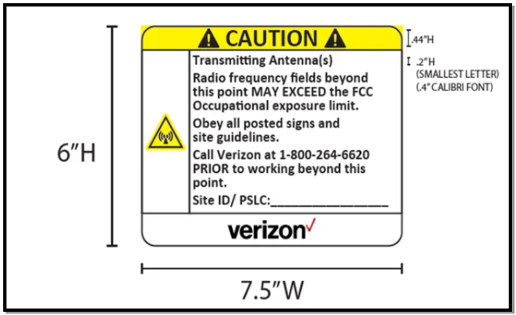
These aluminum CAUTION signs measure 7.5"(W) x 6 "(H) with two 3/8" holes, one at the top and one at the bottom are coated with an industrial strength UV inhibitor for added longevity. This surface mount sign printed in color on a white background is UV, chemical, abrasion, and moisture resistant. RF energy advisory symbol, text fonts, sizes, and colors per ANSI Z535-1998 and IEEE Std. C95.2-1999. In situations where additional signage is needed for areas that are not completely noticeable, arrow signs may enhance the notification to the general public. Arrow signs can indicate that areas behind the sign and to the right to the edge of the sign exceed the FCC Occupational Exposure Limits but by No More Than Ten Times (10x). The arrow signs must be used in conjunction with the HYBRID BARRIER SYSTEM. Trained transient personnel working in an area with a Yellow "CAUTION" must be supervised by an occupational worker with proper training.
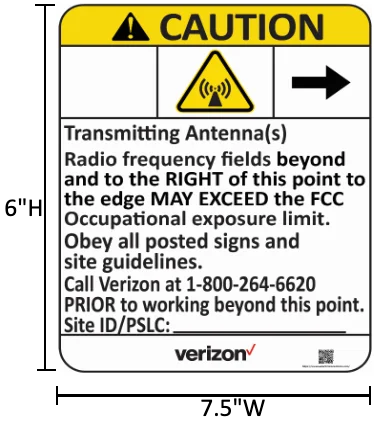
These aluminum CAUTION signs measure 7.5"(W) x 6 "(H) with two 3/8" holes, one at the top and one at the bottom are coated with an industrial strength UV inhibitor for added longevity. This surface mount sign printed in color on a white background is UV, chemical, abrasion, and moisture resistant. RF energy advisory symbol, text fonts, sizes, and colors per ANSI Z535-1998 and IEEE Std. C95.2-1999. In situations where additional signage is needed for areas that are not completely noticeable, arrow signs may enhance the notification to the general public. Arrow signs can indicate that areas behind the sign and to the left to the edge of the sign exceed the FCC Occupational Exposure Limits but by No More Than Ten Times (10x). The arrow signs must be used in conjunction with the HYBRID BARRIER SYSTEM. Trained transient personnel working in an area with a Yellow "CAUTION" must be supervised by an occupational worker with proper training.
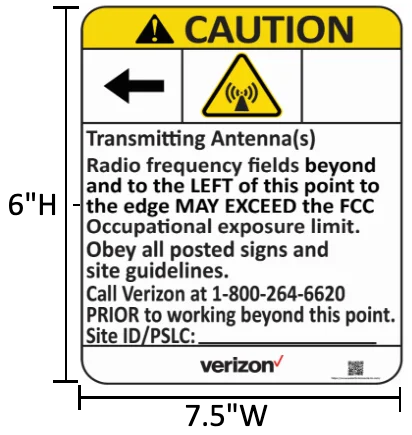
These aluminum Stay Back Caution signs measure 7.5"(W) x 6"(H) with two 3/8" holes, one at the top and one at the bottom are coated with an industrial strength UV inhibitor for added longevity. This surface mount sign printed in color on a white background is UV, chemical, abrasion, and moisture resistant. RF energy advisory symbol, text fonts, sizes, and colors per ANSI Z535-1998 and IEEE Std. C95.2-1999. These signs shall be posted in areas where the RF assessment has determined RF emissions may exceed the FCC Occupational Exposure Limits but by No More Than Ten Times (10x). These may include areas such as at the bases of communications towers/proximity of antennas where personnel were to access these areas may find themselves in RF fields that exceed the FCC Occupational Exposure Limits. When the primary means of administrative controls (i.e. barriers) cannot be feasibly installed due to various reasons, Stay Back should be used.
These aluminum Stay Back Caution signs measure 10"(W) x 7"(H) with two 3/8" holes, one at the top and one at the bottom are coated with an industrial strength UV inhibitor for added longevity. This surface mount sign printed in color on a white background is UV, chemical, abrasion, and moisture resistant. RF energy advisory symbol, text fonts, sizes, and colors per ANSI Z535-1998 and IEEE Std. C95.2-1999. These signs shall be posted in areas where the RF assessment has determined RF emissions may exceed the FCC Occupational Exposure Limits but by No More Than Ten Times (10x). These may include areas such as at the bases of communications towers/proximity of antennas where personnel were to access these areas may find themselves in RF fields that exceed the FCC Occupational Exposure Limits. When the primary means of administrative controls (i.e. barriers) cannot be feasibly installed due to various reasons, Stay Back should be used.
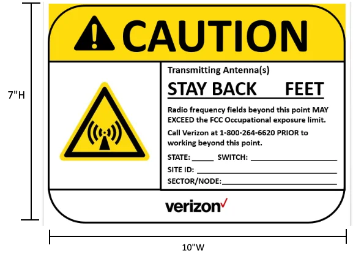
These aluminum WARNING signs measure 7.5"(H) x 6"(W) with two 3/8" holes one at the top and one at the bottom are coated with an industrial strength UV inhibitor for added longevity. This surface mount sign printed in color on a white background is UV, chemical, abrasion, and moisture resistant. RF energy advisory symbol, text fonts, sizes, and colors per ANSI Z535-1998 and IEEE Std. C95.2-1999. These signs shall be posted in advance of the areas that have been determined to have RF emissions levels that exceed ten times (10x) the Occupational Exposure Limits. (Danger Areas Above the Standard) This would include those areas with high-power broadcast or paging or areas within a few feet of most other antennas. Trained transient personnel working in an area with a Red "WARNING" must be supervised by an occupational worker with proper training.
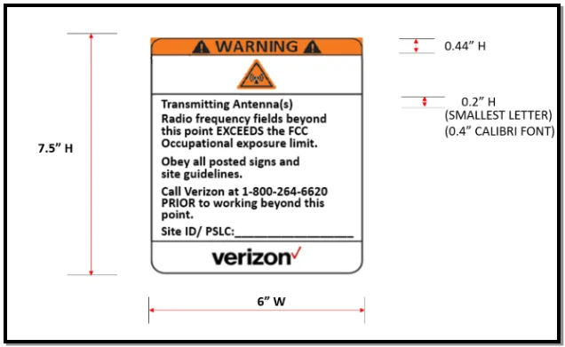
These aluminum WARNING signs measure 7.5"(W) x 6"(H) with two 3/8" holes, one at the top and one at the bottom are coated with an industrial strength UV inhibitor for added longevity. This surface mount sign printed in color on a white background is UV, chemical, abrasion, and moisture resistant. RF energy advisory symbol, text fonts, sizes, and colors per ANSI Z535-1998 and IEEE Std. C95.2-1999. These signs shall be posted in advance of the areas that have been determined to have RF emissions levels that exceed ten times (10x) the Occupational Exposure Limits.(Danger Areas Above the Standard) This would include those areas with high-power broadcast or paging or areas within a few feet of most other antennas. Trained transient personnel working in an area with a Red "WARNING" must be supervised by an occupational worker with proper training.
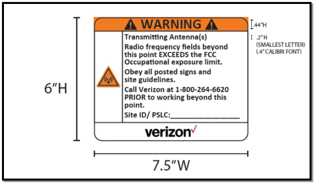
These aluminum WARNING signs measure 7.5"(W) x 6 "(H) with two 3/8" holes, one at the top and one at the bottom are coated with an industrial strength UV inhibitor for added longevity. This surface mount sign printed in color on a white background is UV, chemical, abrasion, and moisture resistant. RF energy advisory symbol, text fonts, sizes, and colors per ANSI Z535-1998 and IEEE Std. C95.2-1999. In situations where additional signage is needed for areas that are not completely noticeable, arrow signs may enhance the notification to the general public. Arrow signs can indicate that areas behind the sign and to the left to the edge of the sign exceed ten times (10x) the Occupational Exposure Limits. The arrow signs must be used in conjunction with the HYBRID BARRIER SYSTEM. Trained transient personnel working in an area with a Red "WARNING" must be supervised by an occupational worker with proper training.
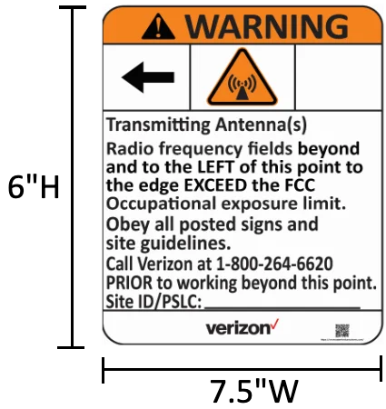
These aluminum WARNING signs measure 7.5"(W) x 6 "(H) with two 3/8" holes, one at the top and one at the bottom are coated with an industrial strength UV inhibitor for added longevity. This surface mount sign printed in color on a white background is UV, chemical, abrasion, and moisture resistant. RF energy advisory symbol, text fonts, sizes, and colors per ANSI Z535-1998 and IEEE Std. C95.2-1999. In situations where additional signage is needed for areas that are not completely noticeable, arrow signs may enhance the notification to the general public. Arrow signs can indicate that areas behind the sign and to the right to the edge of the sign exceed ten times (10x) the Occupational Exposure Limits. The arrow signs must be used in conjunction with the HYBRID BARRIER SYSTEM. Trained transient personnel working in an area with a Red "WARNING" must be supervised by an occupational worker with proper training.
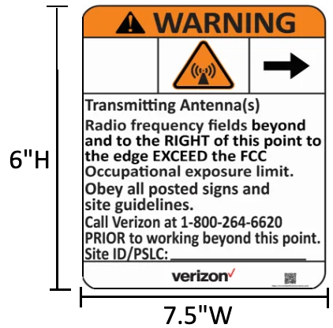
These aluminum Stay Back Warning signs measure 7.5"(W) x 6"(H) with two 3/8" holes, one at the top and one at the bottom are coated with an industrial strength UV inhibitor for added longevity. This surface mount sign printed in color on a white background is UV, chemical, abrasion and moisture resistant. RF energy advisory symbol, text fonts, sizes, and colors per ANSI Z535-1998 and IEEE Std. C95.2-1999. These signs shall be posted in advance of the areas that have been determined to have RF emissions levels that exceed ten times (10x) the Occupational Exposure Limits.(Danger Areas Above the Standard) This would include those areas with high-power broadcast or paging or areas within a few feet of most other antennas. When the primary means of administrative controls (i.e. barriers) cannot be feasibly installed due to various reasons, Stay Back should be used.
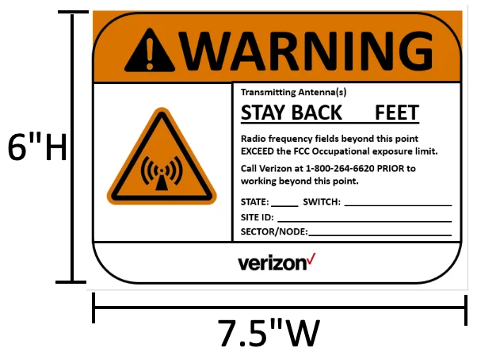
These aluminum Stay Back Warning signs measure 10"(W) x 7"(H) with two 3/8" holes, one at the top and one at the bottom are coated with an industrial strength UV inhibitor for added longevity. This surface mount sign printed in color on a white background is UV, chemical, abrasion and moisture resistant. RF energy advisory symbol, text fonts, sizes, and colors per ANSI Z535-1998 and IEEE Std. C95.2-1999. These signs shall be posted in advance of the areas that have been determined to have RF emissions levels that exceed ten times (10x) the Occupational Exposure Limits.(Danger Areas Above the Standard) This would include those areas with high-power broadcast or paging or areas within a few feet of most other antennas. When the primary means of administrative controls (i.e. barriers) cannot be feasibly installed due to various reasons, Stay Back should be used.
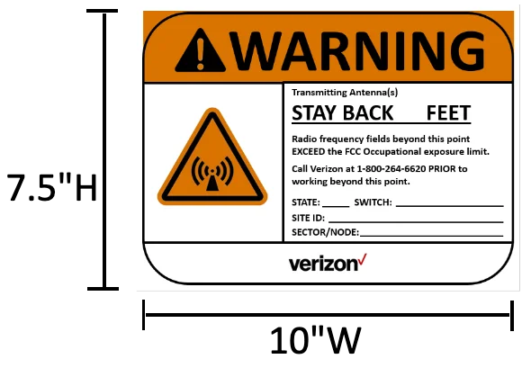
These aluminum Notice Up Arrow signs measure 6"(W) x 7.5"(H) with two 3/8" holes, one at the top and one at the bottom are coated with an industrial-strength UV inhibitor for added longevity. This surface mount sign printed in color on a white background, is UV, chemical, abrasion, and moisture resistant. RF energy advisory symbol, text fonts, sizes, and colors per ANSI Z535-1998 and IEEE Std. C95.2-1999.
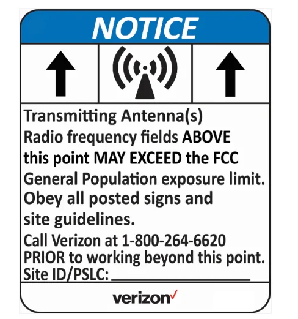
These aluminum Caution Up Arrow signs measure 6"(W) x 7.5"(H) with two 3/8" holes, one at the top and one at the bottom are coated with an industrial-strength UV inhibitor for added longevity. This surface mount sign, printed in color on a white background, is UV, chemical, abrasion, and moisture resistant. RF energy advisory symbol, text fonts, sizes, and colors per ANSI Z535-1998 and IEEE Std. C95.2-1999.
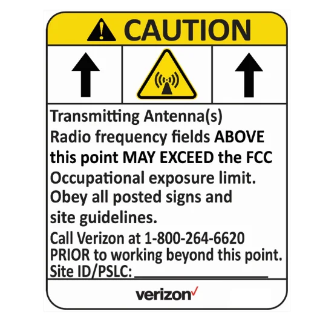
These aluminum Warning Up Arrow signs measure 7.5"(W) x 6"(H) with two 3/8" holes, one at the top and one at the bottom are coated with an industrial-strength UV inhibitor for added longevity. This surface mount sign printed in color on a white background, is UV, chemical, abrasion, and moisture resistant. RF energy advisory symbol, text fonts, sizes, and colors per ANSI Z535-1998 and IEEE Std. C95.2-1999.
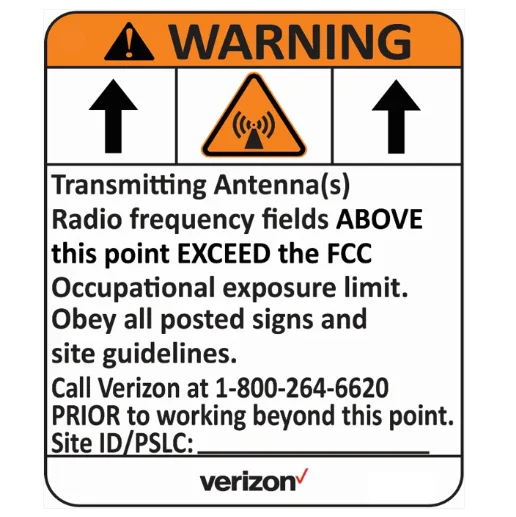
These BILINGUAL SIGN measures 12"(W) x 18"(H) are coated with an industrial-strength UV inhibitor for added longevity. This surface mount sign, printed in color on a white background, is UV, chemical, abrasion, and moisture resistant. RF energy advisory symbol, text fonts, sizes, and colors per ANSI Z535-1998 and IEEE Std. C95.2-1999.
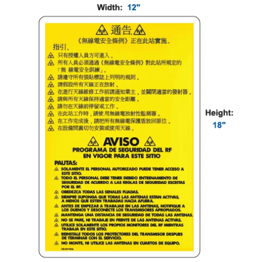
Whether you need a technical team, a compliance assessment, or the right hire to grow your organization — we'd like to hear from you.
239 New Road, Suite B202
Parsippany, NJ 07054